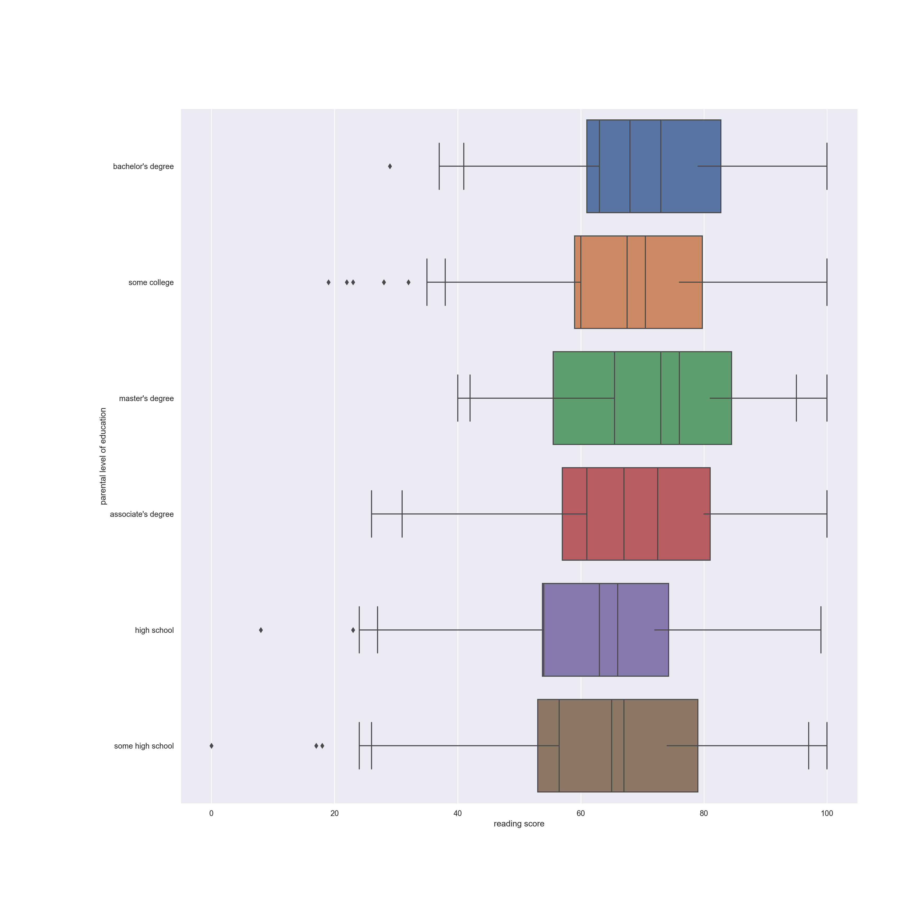
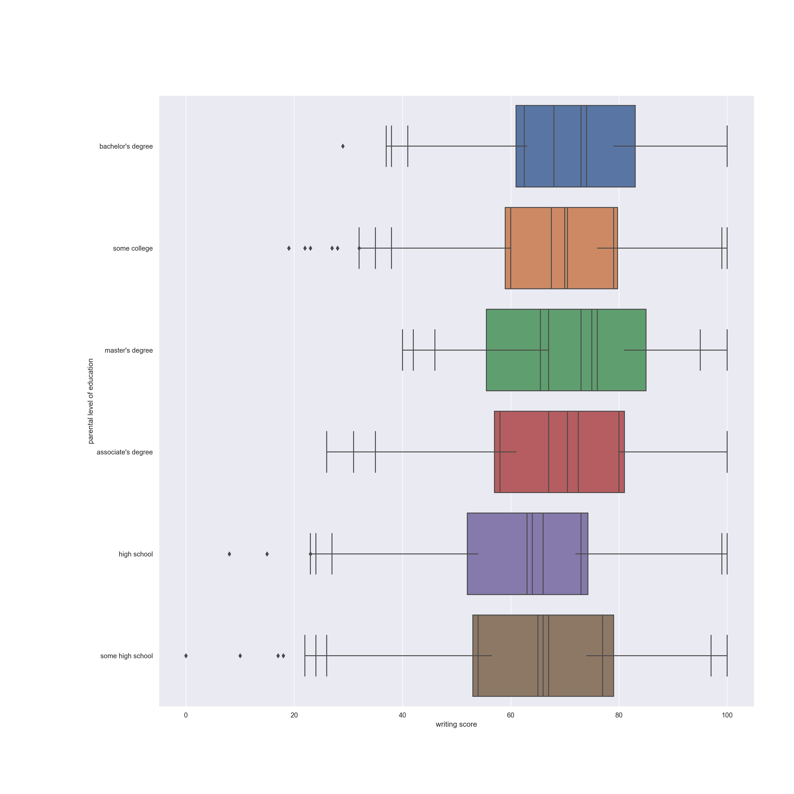
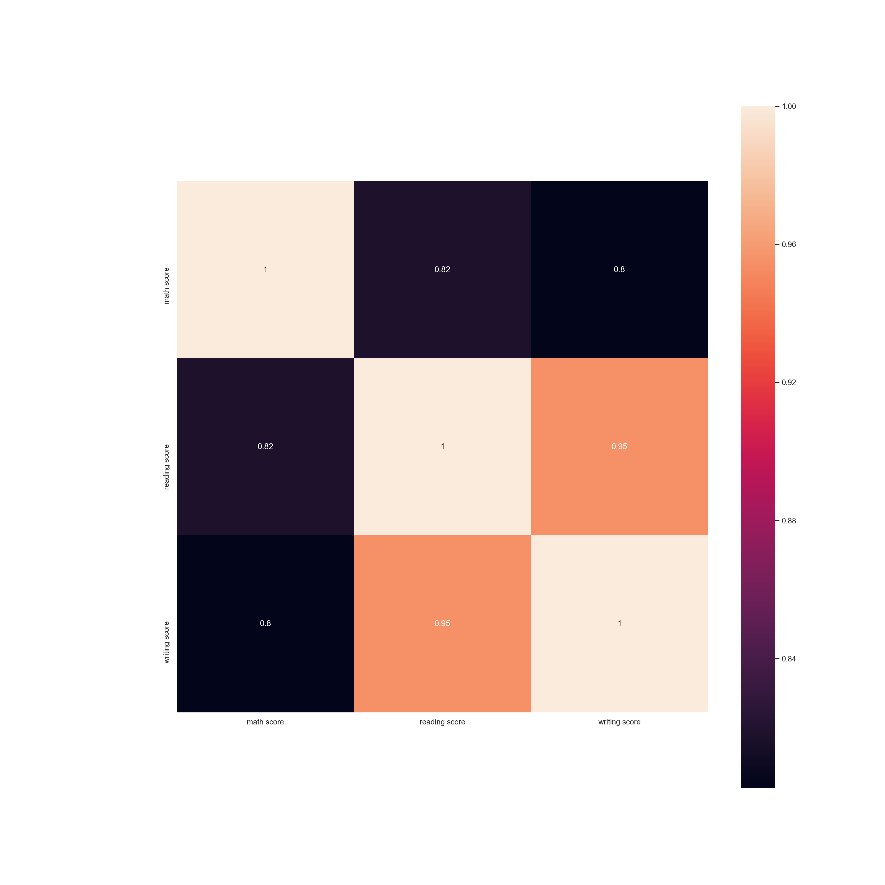
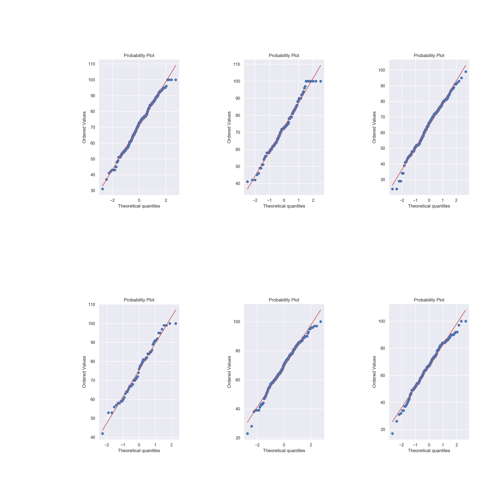

Python
import pandas as pd
df = pd.read_csv(r"StudentsPerformance.csv")
df1 = df[df["parental level of education"] == "associate's degree"]
df2 = df[df["parental level of education"] == "bachelor's degree"]
df3 = df[df["parental level of education"] == "high school"]
df4 = df[df["parental level of education"] == "master's degree"]
df5 = df[df["parental level of education"] == "some college"]
df6 = df[df["parental level of education"] == "some high school"]import pandas as pd
print (df.shape)## (1000, 8)print(df.head())## gender race/ethnicity ... reading score writing score
## 0 female group B ... 72 74
## 1 female group C ... 90 88
## 2 female group B ... 95 93
## 3 male group A ... 57 44
## 4 male group C ... 78 75
##
## [5 rows x 8 columns]print(df.describe())## math score reading score writing score
## count 1000.00000 1000.000000 1000.000000
## mean 66.08900 69.169000 68.054000
## std 15.16308 14.600192 15.195657
## min 0.00000 17.000000 10.000000
## 25% 57.00000 59.000000 57.750000
## 50% 66.00000 70.000000 69.000000
## 75% 77.00000 79.000000 79.000000
## max 100.00000 100.000000 100.000000import pandas as pd
#Media, cuartiles y desviacion estandar
print(df1.describe()) ## math score reading score writing score
## count 222.000000 222.000000 222.000000
## mean 67.882883 70.927928 69.896396
## std 15.112093 13.868948 14.311122
## min 26.000000 31.000000 35.000000
## 25% 57.000000 61.000000 58.000000
## 50% 67.000000 72.500000 70.500000
## 75% 80.000000 81.000000 80.000000
## max 100.000000 100.000000 100.000000print(df2.describe()) ## math score reading score writing score
## count 118.000000 118.00000 118.000000
## mean 69.389831 73.00000 73.381356
## std 14.943789 14.28525 14.728262
## min 29.000000 41.00000 38.000000
## 25% 61.000000 63.00000 62.500000
## 50% 68.000000 73.00000 74.000000
## 75% 79.000000 82.75000 83.000000
## max 100.000000 100.00000 100.000000print(df3.describe()) ## math score reading score writing score
## count 196.000000 196.000000 196.000000
## mean 62.137755 64.704082 62.448980
## std 14.539651 14.132130 14.085907
## min 8.000000 24.000000 15.000000
## 25% 53.750000 54.000000 52.000000
## 50% 63.000000 66.000000 64.000000
## 75% 72.000000 74.250000 73.000000
## max 99.000000 99.000000 100.000000print(df4.describe()) ## math score reading score writing score
## count 59.000000 59.000000 59.000000
## mean 69.745763 75.372881 75.677966
## std 15.153915 13.775163 13.730711
## min 40.000000 42.000000 46.000000
## 25% 55.500000 65.500000 67.000000
## 50% 73.000000 76.000000 75.000000
## 75% 81.000000 84.500000 85.000000
## max 95.000000 100.000000 100.000000print(df5.describe()) ## math score reading score writing score
## count 226.000000 226.000000 226.000000
## mean 67.128319 69.460177 68.840708
## std 14.312897 14.057049 15.012331
## min 19.000000 23.000000 19.000000
## 25% 59.000000 60.000000 60.000000
## 50% 67.500000 70.500000 70.000000
## 75% 76.000000 79.750000 79.000000
## max 100.000000 100.000000 99.000000print(df6.describe())
#Medianas## math score reading score writing score
## count 179.000000 179.000000 179.000000
## mean 63.497207 66.938547 64.888268
## std 15.927989 15.479295 15.736197
## min 0.000000 17.000000 10.000000
## 25% 53.000000 56.500000 54.000000
## 50% 65.000000 67.000000 66.000000
## 75% 74.000000 79.000000 77.000000
## max 97.000000 100.000000 100.000000print(df1.median()) ## math score 67.0
## reading score 72.5
## writing score 70.5
## dtype: float64print(df2.median()) ## math score 68.0
## reading score 73.0
## writing score 74.0
## dtype: float64print(df3.median()) ## math score 63.0
## reading score 66.0
## writing score 64.0
## dtype: float64print(df4.median()) ## math score 73.0
## reading score 76.0
## writing score 75.0
## dtype: float64print(df5.median()) ## math score 67.5
## reading score 70.5
## writing score 70.0
## dtype: float64print(df6.median()) ## math score 65.0
## reading score 67.0
## writing score 66.0
## dtype: float64import seaborn as sns
import matplotlib.pyplot as plt
plt.clf()
##Matriz de dispersión por nivel de educación de los padres
mdd1 = sns.pairplot(df1)
plt.show()
mdd2 = sns.pairplot(df2)
plt.show()
mdd3 = sns.pairplot(df3)
plt.show()
mdd4 = sns.pairplot(df4)
plt.show()mdd5 = sns.pairplot(df5)
plt.show()
mdd6 = sns.pairplot(df6)
plt.show()import seaborn as sns
plt.clf()
##Matriz de dispersión por nivel de educación de los padres consolidada
sns.pairplot(df, hue="parental level of education")
plt.show()plt.clf()plt.clf()
import seaborn as sns
##diagrama de dispersión matematicas vs lectura##
sns.scatterplot(df["math score"], df["reading score"], hue=df["parental level of education"])
plt.show()
import seaborn as sns
plt.clf()
##diagrama de dispersión lectura vs escritura##
sns.scatterplot(df["math score"], df["writing score"], hue=df["parental level of education"])
plt.show()import seaborn as sns
plt.clf()
##diagrama de dispersión lectura vs escritura##
sns.scatterplot(df["reading score"], df["writing score"], hue=df["parental level of education"])
plt.show()
#histogramas de las notas de matemáticas de acuerdo a la educación de los padres
import matplotlib.pyplot as plt
plt.clf()
sns.set(style="darkgrid")
plt.hist(df1["math score"], label="associate's degree")
plt.hist(df2["math score"], label="bachelor's degree")
plt.hist(df3["math score"], label="master's degree")
plt.hist(df4["math score"], label="some college")
plt.hist(df5["math score"], label="high school")
plt.hist(df6["math score"], label="some high school")
plt.title('Notas de matemática por educación de los padres')
plt.legend()
plt.show()plt.clf()#histogramas de las notas de matemáticas de acuerdo a la educación de los padres
import seaborn as sns
plt.clf()
plt.rcParams['figure.figsize'] = (18.0, 18.0)
sns.set(style="darkgrid")
sns.distplot( df1["math score"] , color="skyblue", label="associate's degree")
sns.distplot( df2["math score"] , color="red", label="bachelor's degree")
sns.distplot( df3["math score"] , color="gold", label="master's degree")
sns.distplot( df4["math score"] , color="olive", label="some college")
sns.distplot( df5["math score"] , color="teal", label="high school")
sns.distplot( df6["math score"] , color="gray", label="some high school")
plt.legend()
plt.show()
#histogramas de las notas de matemáticas de acuerdo a la educación de los padres
import seaborn as sns
plt.clf()
plt.rcParams['figure.figsize'] = (18.0, 18.0)
sns.set(style="darkgrid")
f, axes = plt.subplots(2, 3, figsize=(18, 18), sharex=True)
sns.distplot( df1["math score"] , color="skyblue", label="associate's degree", ax=axes[0, 0])
plt.legend()## No handles with labels found to put in legend.plt.show()
sns.distplot( df2["math score"] , color="red", label="bachelor's degree", ax=axes[0, 1])
plt.legend()## No handles with labels found to put in legend.plt.show()sns.distplot( df3["math score"] , color="gold", label="master's degree", ax=axes[0, 2])
plt.legend()## No handles with labels found to put in legend.plt.show()sns.distplot( df4["math score"] , color="olive", label="some college", ax=axes[1, 0])
plt.legend()## No handles with labels found to put in legend.plt.show()sns.distplot( df5["math score"] , color="teal", label="high school", ax=axes[1, 1])
plt.legend()## No handles with labels found to put in legend.plt.show()sns.distplot( df6["math score"] , color="gray", label="some high school", ax=axes[1, 2])
plt.legend()
plt.show()import matplotlib.pyplot as plt
#histogramas de las notas de lectura de acuerdo a la educación de los padres
plt.clf()
sns.set(style="darkgrid")
plt.hist(df1["reading score"], label="associate's degree")
plt.hist(df2["reading score"], label="bachelor's degree")
plt.hist(df3["reading score"], label="master's degree")
plt.hist(df4["reading score"], label="some college")
plt.hist(df5["reading score"], label="high school")
plt.hist(df6["reading score"], label="some high school")
plt.title('Notas de lectura por educación de los padres')
plt.legend()
plt.show()
#histogramas de las notas de matemáticas de acuerdo a la educación de los padres
import seaborn as sns
plt.clf()
plt.rcParams['figure.figsize'] = (18.0, 18.0)
sns.set(style="darkgrid")
sns.distplot( df1["reading score"] , color="skyblue", label="associate's degree")
sns.distplot( df2["reading score"] , color="red", label="bachelor's degree")
sns.distplot( df3["reading score"] , color="gold", label="master's degree")
sns.distplot( df4["reading score"] , color="olive", label="some college")
sns.distplot( df5["reading score"] , color="teal", label="high school")
sns.distplot( df6["reading score"] , color="gray", label="some high school")
plt.legend()
plt.show()#histogramas de las notas de matemáticas de acuerdo a la educación de los padres
import seaborn as sns
plt.clf()
plt.rcParams['figure.figsize'] = (18.0, 18.0)
sns.set(style="darkgrid")
f, axes = plt.subplots(2, 3, figsize=(18, 18), sharex=True)
sns.distplot( df1["reading score"] , color="skyblue", label="associate's degree", ax=axes[0, 0])
plt.legend()## No handles with labels found to put in legend.sns.distplot( df2["reading score"] , color="red", label="bachelor's degree", ax=axes[0, 1])
plt.legend()## No handles with labels found to put in legend.sns.distplot( df3["reading score"] , color="gold", label="master's degree", ax=axes[0, 2])
plt.legend()## No handles with labels found to put in legend.sns.distplot( df4["reading score"] , color="olive", label="some college", ax=axes[1, 0])
plt.legend()## No handles with labels found to put in legend.sns.distplot( df5["reading score"] , color="teal", label="high school", ax=axes[1, 1])
plt.legend()## No handles with labels found to put in legend.sns.distplot( df6["reading score"] , color="gray", label="some high school", ax=axes[1, 2])
plt.legend()
plt.show()
import matplotlib.pyplot as plt
#histogramas de las notas de escritura de acuerdo a la educación de los padres
plt.clf()
sns.set(style="darkgrid")
plt.hist(df1["writing score"], label="associate's degree")
plt.hist(df2["writing score"], label="bachelor's degree")
plt.hist(df3["writing score"], label="master's degree")
plt.hist(df4["writing score"], label="some college")
plt.hist(df5["writing score"], label="high school")
plt.hist(df6["writing score"], label="some high school")
plt.title('Notas de escritura por educación de los padres')
plt.legend()
plt.show()#histogramas de las notas de escritura de acuerdo a la educación de los padres
import seaborn as sns
plt.clf()
plt.rcParams['figure.figsize'] = (18.0, 18.0)
sns.set(style="darkgrid")
sns.distplot( df1["writing score"] , color="skyblue", label="associate's degree")
sns.distplot( df2["writing score"] , color="red", label="bachelor's degree")
sns.distplot( df3["writing score"] , color="gold", label="master's degree")
sns.distplot( df4["writing score"] , color="olive", label="some college")
sns.distplot( df5["writing score"] , color="teal", label="high school")
sns.distplot( df6["writing score"] , color="gray", label="some high school")
plt.legend()
plt.show()
#histogramas de las notas de matemáticas de acuerdo a la educación de los padres
import seaborn as sns
plt.clf()
plt.rcParams['figure.figsize'] = (18.0, 18.0)
sns.set(style="darkgrid")
f, axes = plt.subplots(2, 3, figsize=(18, 18), sharex=True)
sns.distplot( df1["writing score"] , color="skyblue", label="associate's degree", ax=axes[0, 0])
plt.legend()## No handles with labels found to put in legend.sns.distplot( df2["writing score"] , color="red", label="bachelor's degree", ax=axes[0, 1])
plt.legend()## No handles with labels found to put in legend.sns.distplot( df3["writing score"] , color="gold", label="master's degree", ax=axes[0, 2])
plt.legend()## No handles with labels found to put in legend.sns.distplot( df4["writing score"] , color="olive", label="some college", ax=axes[1, 0])
plt.legend()## No handles with labels found to put in legend.sns.distplot( df5["writing score"] , color="teal", label="high school", ax=axes[1, 1])
plt.legend()## No handles with labels found to put in legend.sns.distplot( df6["writing score"] , color="gray", label="some high school", ax=axes[1, 2])
plt.legend()
plt.show()
plt.clf()
import seaborn as sns
plt.rcParams['figure.figsize'] = (18.0, 18.0)
sns.boxplot(df["math score"], df["parental level of education"])
plt.subplots_adjust(left=0.2, right=0.95, wspace=0.8, hspace=0.8)
plt.show()
import seaborn as sns
plt.rcParams['figure.figsize'] = (18.0, 18.0)
sns.boxplot(df["reading score"], df["parental level of education"])
plt.show()
import seaborn as sns
plt.rcParams['figure.figsize'] = (18.0, 18.0)
sns.boxplot(df["writing score"], df["parental level of education"])
plt.show()
import seaborn as sns
plt.clf()
##Matriz de correlación##
print(df.corr())## math score reading score writing score
## math score 1.000000 0.817580 0.802642
## reading score 0.817580 1.000000 0.954598
## writing score 0.802642 0.954598 1.000000import seaborn as sns
plt.clf()
##Matriz de correlación##
sns.heatmap(df.corr(), square=True, annot=True)
plt.show()
plt.clf()
import pylab
import scipy.stats as stats
from scipy.stats import norm
import matplotlib.pyplot as plt
plt.rcParams['figure.figsize'] = (18.0, 18.0)
##prueba de normalidad##
plt.subplot(231)
stats.probplot(df1["math score"], dist="norm", plot=pylab)
plt.subplot(232)
stats.probplot(df2["math score"], dist="norm", plot=pylab)
plt.subplot(233)
stats.probplot(df3["math score"], dist="norm", plot=pylab)
plt.subplot(234)
stats.probplot(df4["math score"], dist="norm", plot=pylab)
plt.subplot(235)
stats.probplot(df5["math score"], dist="norm", plot=pylab)
plt.subplot(236)
stats.probplot(df6["math score"], dist="norm", plot=pylab)
plt.show()plt.clf()
import pylab
import scipy.stats as stats
from scipy.stats import norm
import matplotlib.pyplot as plt
plt.rcParams['figure.figsize'] = (18.0, 18.0)
###
plt.subplot(231)
stats.probplot(df1["reading score"], dist="norm", plot=pylab)
plt.subplot(232)
stats.probplot(df2["reading score"], dist="norm", plot=pylab)
plt.subplot(233)
stats.probplot(df3["reading score"], dist="norm", plot=pylab)
plt.subplot(234)
stats.probplot(df4["reading score"], dist="norm", plot=pylab)
plt.subplot(235)
stats.probplot(df5["reading score"], dist="norm", plot=pylab)
plt.subplot(236)
stats.probplot(df6["reading score"], dist="norm", plot=pylab)
plt.show()
plt.clf()
import pylab
import scipy.stats as stats
from scipy.stats import norm
import matplotlib.pyplot as plt
plt.rcParams['figure.figsize'] = (18.0, 18.0)
####
plt.subplot(231)
stats.probplot(df1["writing score"], dist="norm", plot=pylab)
plt.subplot(232)
stats.probplot(df2["writing score"], dist="norm", plot=pylab)
plt.subplot(233)
stats.probplot(df3["writing score"], dist="norm", plot=pylab)
plt.subplot(234)
stats.probplot(df4["writing score"], dist="norm", plot=pylab)
plt.subplot(235)
stats.probplot(df5["writing score"], dist="norm", plot=pylab)
plt.subplot(236)
stats.probplot(df6["writing score"], dist="norm", plot=pylab)
plt.show()